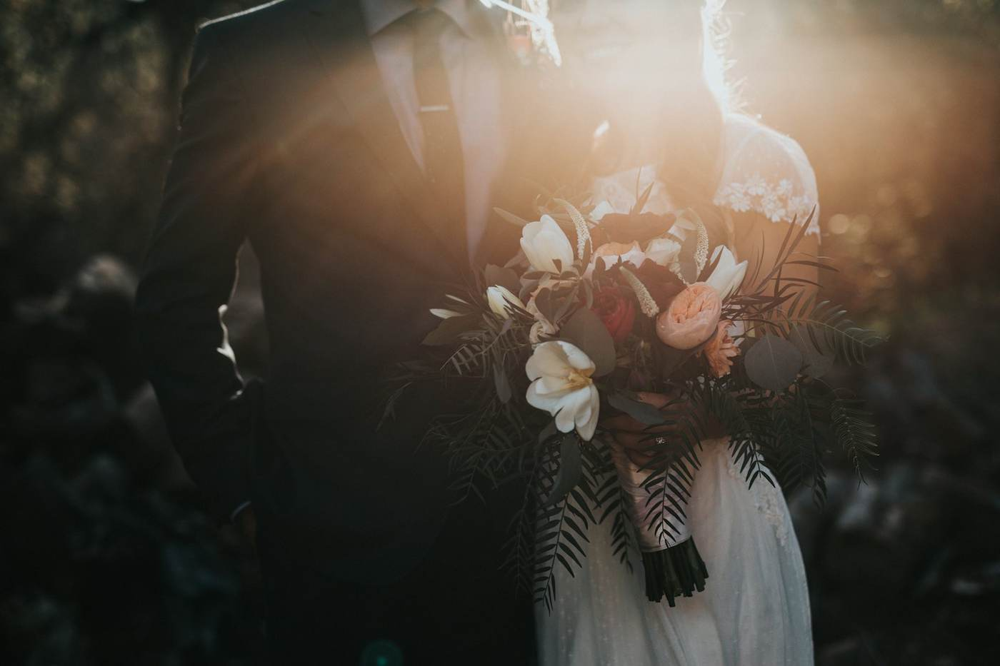
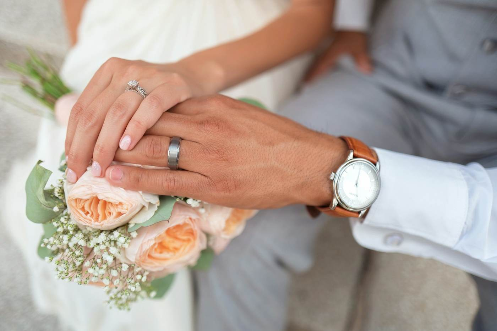

Saltar para o conteúdo
Luz de Agosto
fotografia de casamento
Início
Sobre
Serviços
Galeria
Contacto
Ver disponibilidade
Ver disponibilidade
Galeria
Histórias
de amor
Alguns dos casamentos que tive a sorte de fotografar.

